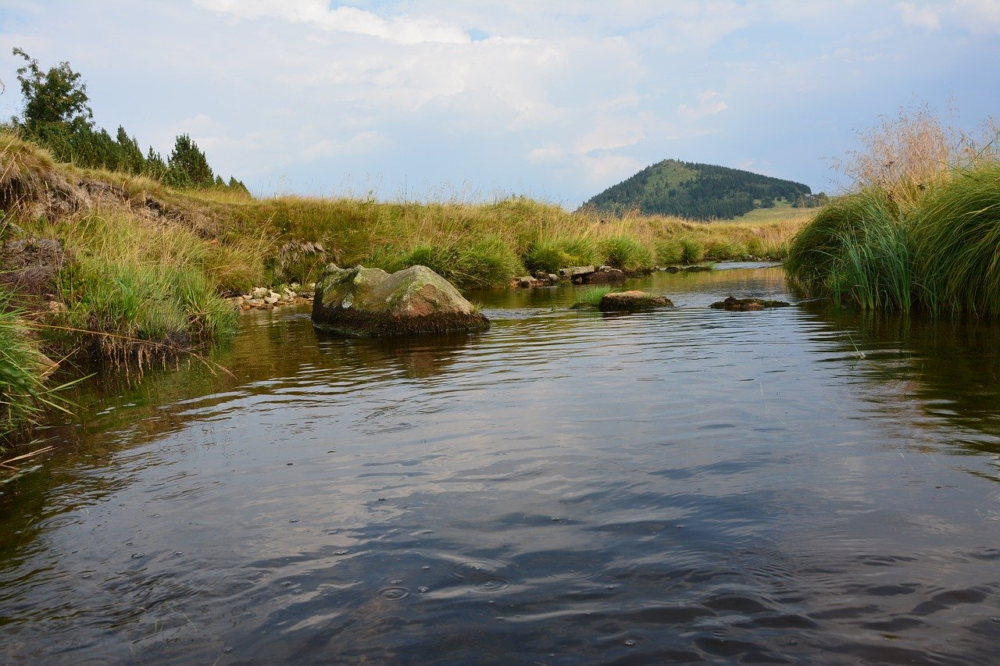

Jindřichov (německy: Hennersdorf) je vesnice, část města Lučany nad Nisou v okrese Jablonec nad Nisou. Nachází se v srdci nejkrásnějšího českého pohoří Jizerské hory. Nachází se asi 2 km na západ od Lučan nad Nisou. Je zde evidováno 94 adres. Trvale zde žije 92 obyvatel. Jindřichov leží v katastrálním území Jindřichov nad Nisou o rozloze 0,95 km2.
